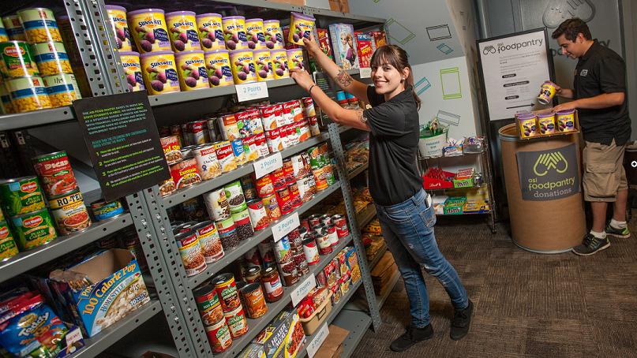

About Harvest Food Bank
Harvest Food Bank was founded in 2015 to provide for the needs of our local community. We are dedicated to providing healthy food to everyone who needs it. We partner with multiple local businesses to distribute prepared meals and combat food waste. Our volunteers work tirelessly to ensure that everyone in need is assisted.
We are guided by a board of directors, our awesome program coordinators and our facility manager to ensure that we are providing the best services possible and that they are in line with actual need in the community. We are committed to always providing a safe and respectful environment, free from judgement and discrimination for everyone who volunteers and everyone who receives services.
Our facility, located at 123 Main Street in Westfield, Wisconsin hosts a large self-service pantry area, a commercial kitchen, and a large warehouse space for storage of food and other goods. Additionally, we have a large walk in cooler and freezer on site to ensure that everything we distribute stays safe and fresh. We are accessible by car and bus and are a short distance from a major bike path.